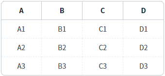
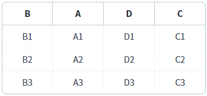

GridView의 'setColumnOrder' 메소드를 사용하여 컬럼의 순서를 변경하고, 'getColumnOrder' 메소드로 컬럼의 순서를 반환받는 예제입니다.
각 메소드의 기능은 다음과 같습니다.
setColumnOrder : 컬럼의 순서를 Index 또는 ID로 설정합니다.
getColumnOrder : 컬럼의 순서를 Index 또는 ID로 반환합니다.
이 메소드들은 GridView의 개인화 기능을 구현할 때 주로 사용됩니다. 여기서 '개인화'는 컬럼의 순서, 컬럼 숨김, 정렬 등을 사용자별로 제공하는 기능을 의미합니다.
스크립트로 컬럼의 순서 변경하기
컬럼의 순서 반환받기
1
STEP 1: 초기 상태를 확인합니다.
GridView의 컬럼이 'A', 'B', C', 'D' 순으로 구성되었습니다.
Image 1.브라우저(Chrome) 실행 예시

2
STEP 2: 스크립트로 컬럼의 순서 변경하기
"컬럼의 순서를 'B', 'A', 'D', 'C'로 변경하기" 버튼을 클릭합니다.3
STEP 3: 실행된 결과를 확인합니다.
GridView의 컬럼이 'B', 'A', 'D', 'C' 순으로 구성됩니다.
Image 2.브라우저(Chrome) 실행 예시

4
STEP 4: 컬럼의 순서를 ID로 반환받기
"컬럼의 순서를 ID로 반환받기" 버튼을 클릭합니다.5
STEP 5: 실행된 결과를 확인합니다.
'로그 확인'에 출력된 로그를 확인합니다.(브라우저의 개발자 도구 콘솔에도 로그가 출력되며, 객체 형식으로 확인할 수 있습니다.) 현재 구성된 GridView의 컬럼의 ID가 순서대로 배열에 담겨 반환됩니다.
Example 1.Log
[07:52:20] # 스크립트 실행 grd_exam1.getColumnOrder(true); 반환 값: ["col_b","col_a","col_d","col_c"]
6
STEP 6: 컬럼의 순서를 Index로 반환받기
"컬럼의 순서를 Index로 반환받기" 버튼을 클릭합니다.7
STEP 7: 실행된 결과를 확인합니다.
'로그 확인'에 출력된 로그를 확인합니다.(브라우저의 개발자 도구 콘솔에도 로그가 출력되며, 객체 형식으로 확인할 수 있습니다.) 현재 구성된 GridView의 컬럼의 ID가 순서대로 배열에 담겨 반환됩니다.
Example 2.Log
[07:52:34] # 스크립트 실행 grd_exam1.getColumnOrder(); 반환 값: [1,0,3,2]
GridView의 'setColumnOrder' 메소드를 사용하여 스크립트를 작성합니다. 세부 설정은 아래의 스크립트 예시에 작성되어 있습니다.
Example 3.Script
//예제 파일에서는 스크립트 'scwin.btn_exam1_1_onclick'에 작성되어 있습니다. // GridView 'grd_exam1'의 컬럼 순서를 'B', 'A', 'D', 'C' 순으로 변경합니다. grd_exam1.setColumnOrder(["col_b", "col_a", "col_d", "col_c"]); // GridView의 컬럼 순서를 Index로 지정하는 경우 // grd_exam1.setColumnOrder([1,0,3,2]);
GridView의 'getColumnOrder' 메소드를 사용하여 스크립트를 작성합니다. 첫 번째 인자 설정을 통해 아이디 또는 인덱스로 반환받을 수 있습니다. 세부 설정은 아래의 스크립트 예시에 작성되어 있습니다.
Example 4.Script - ID로 반환받기
//예제 파일에서는 스크립트 'scwin.btn_exam2_1_onclick'에 작성되어 있습니다. // GridView 'grd_exam1'의 컬럼 순서를 ID로 반환받습니다. var result = grd_exam1.getColumnOrder(true); // 반환 값 예시) ["col_b","col_a","col_d","col_c"]
Example 5.Script - Index로 반환받기
//예제 파일에서는 스크립트 'scwin.btn_exam2_2_onclick'에 작성되어 있습니다. // GridView 'grd_exam1'의 컬럼 순서를 Index로 반환받습니다. var result = grd_exam1.getColumnOrder(); // 반환 값 예시) [1,0,3,2]
getColumnOrder( byName )
setColumnOrder( columnOrderArray )